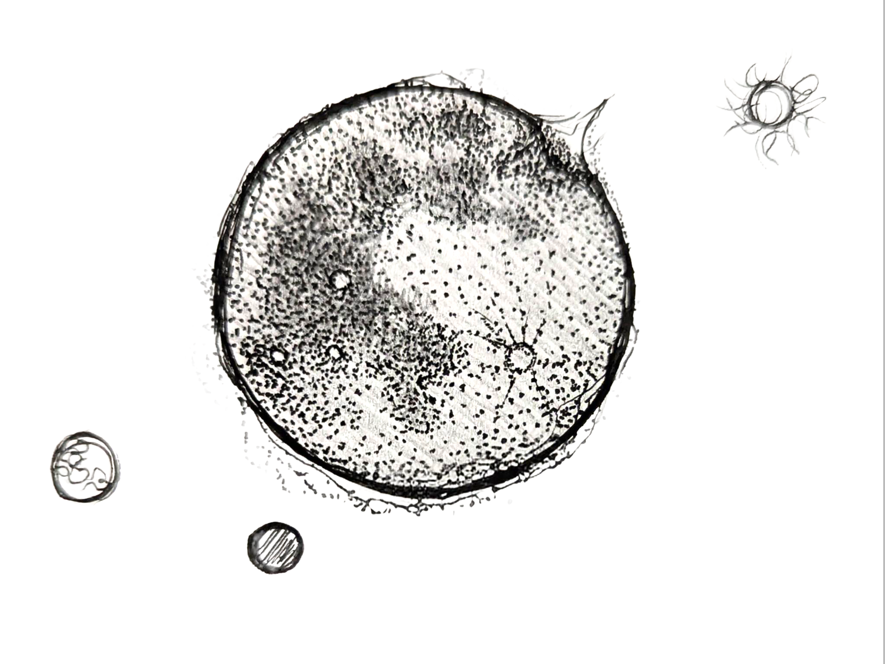

Est. First Full Moon You Notice
TIME TIME TIME
Fiscal Quarters·Black Friday·Performance Reviews·Prime Day·Q4 Targets·Cyber Monday·Year-End Close·Sprint Planning
Keep
Different
Time
The most radical thing you can do is change what clock you live by. This one runs on the moon. No one can own it, sell it, or take it away from you.

↓ scroll ↓
Why keep different time
01
The clock you live by determines who you serve.
The dominant calendar is an extraction schedule disguised as neutral time. Every recurring rhythm in mainstream life either exists to organize your labor or organize your consumption. When people say time is "moving too fast" — that's not a personal failing. That's the calendar working as designed.
[read]
02
Celestial time is the one clock nobody owns.
The moon doesn't have a shareholder. The solstice doesn't have a marketing team. These rhythms predate every empire, every economy, every institution. No one can buy the full moon. No one can move the equinox to maximize Q4 revenue. Choosing celestial time is a quiet, structural act of refusal.
[read]
03
The system's deepest capture is temporal.
It doesn't just take your money or your labor — it takes your when. It decides when you rest, when you celebrate, when you grieve. You get the weekend if you're lucky. You get three bereavement days. Taking back the authority to decide when we feast, when we mourn, when we serve, when we seek joy — that's reclaiming the most fundamental organizing principle of human life.
[read]
04
Chosen family doesn't have holidays — until now.
The relationships you chose are more fragile than the ones you inherited — not because they matter less, but because nothing structural holds them together. Biological families have Thanksgiving, Christmas, birthdays. Found family has... brunch? Maybe? A shared calendar gives the family you built the same scaffolding that inherited bonds get by default.
[read]
The Calendar
/// The Calendar ///
Solar Feasts
— four times a year, when the earth turns
Spring Equinox
The Feast of Transition
To celebrate coming out — in all its forms. Light crosses into dominance. The earth itself is emerging from dormancy.
Summer Solstice
The Feast of Joy
To celebrate living outside the closet and outside the lines. Maximum light, minimum shadow. Be fully, completely seen.
Fall Equinox
The Feast of the Elders
To honor our heritage, our ancestors, and the ones who planted what we're harvesting now. We reap what others sowed.
Winter Solstice
The Feast of Woes
To mock our oppressors and mourn the closet. The longest night holds both grief and subversive laughter.
Lunar Sabbaths
— every month, the moon decides
← drag to scroll →
Blue Moon High Sabbaths
— rare time outside of time
14 days
The Festival of Found Family
A full fortnight to celebrate the family you chose. Not a single dinner — a season of recognition.
~every 2.7 years. worth the wait.
14 days
The Festival of Estrangement
Equal time for the losses. The families that couldn't or wouldn't hold us. The grief and the gift get the same weight.
the shadow companion. same duration, same dignity.
Start keeping
different
time.
A printable calendar. A shared rhythm. An ancient clock that belongs to no one and therefore belongs to you.
☾